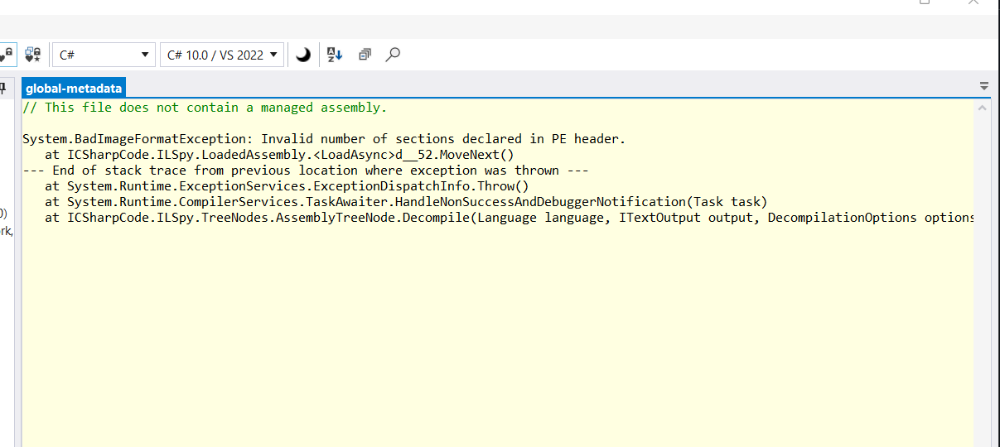

Introduce CyberBlog and the untold stories behind the scenes
segfault.e404 September 6, 2023
A new journey has officially begun
Today, September 6, 2023, I'm very proud to annouce to everyone: CyberBlog
launched! And to celebrate this memorable milestone, I will tell you the story
of the birth of CyberBlog.
Sit down, relax, turn on some symphony,
and read it!
Earlier
I
t was a Friday night a year ago, September 6, 2022 at 9.40pm and I was working
on a new project, which is actually a new project (oh no, it's not even should
be CyberBlog like you're seeing here), it's a project in which I reverse-engineered
my university's programming grading program and ported it to Linux using C++
It's an interesting project, I think. And based on what the original program does,
as well as digging deeper into its transparent INI configuration file, I've known
it does the following:
- Open/close file
- Open File selection dialog to get location where the source code to submit placed
- Compile program to the temporary folder of the application
- Compare the results with the testcase and give the score as a percentage
- With 0%: You have 0-point
- With 5%: You have 0.5-point
- With 10%: You have 1-point
- With 15%: You have 1.5-point
- With 20%: You have 2-point
- With 25%: You have 2.5-point
- With 30%: You have 3-point
And to compare the results for accuracy checking and grading, it will rely on regular expressions to get the program's results, then compare and give the corresponding percentages. I will cover this in detail in the article: How do I convert a C# application that only works on Windows to C++ that works on everything?
But in the end, problems will always happen, no matter how careful you try. And my conversion created a big problem: The converted program was somehow unable to score the code samples I had prepared with output and input for complete testing are completely transparent.
Even except the functions of opening and reading files, getting file path, open choose file dialog, everything else is not working and I have a C++ GUI program that can only display interface, open/close files and get file path. Other things? No, it doesn't work, and their code is basically "garbage".
I spent hours and hours decompiling the original software, scanning it line by line and comparing it, but in the end, reading code from an XOR-encrypted, obfuscated, anti-debug and anti-decompiled binary is not easy. Hours of searching pushed me to the limit, and I kept writing, deleting, writing, deleting, over and over again, and I got nothing. Nothing can work and code for these features continue staying in garbage state.
In my endless boredom, I boredly dragged the scrollbar, clicked on the search pages, and on the 10th page of the search, I found something that seemed useful.
Oh, I wish I'd realized it sooner
C
licking on a link on a search result takes me to a website. Its interface looks like it
did in the 90s. There's CSS, but no JavaScript, and even the CSS is just for show (because
the HTML doesn't reference that CSS file), so it's a true Plain Text page meaning, and I
will have to search for an answer to the problem I have been trying to solve for the past hours
By the way, that grading software was originally written in C#, but because it was obfuscated,
even ILSpy can't help, even dropping the file into ILSpy will make ILSpy unable to decompile
it and returns the same result as an Exception like:

I couldn't think of anything until I went to that website, scrolled to the bottom and it said:
For programs compiled with the regular .NET Framework, an EXE file can be used to decompile.
However, if this is not possible, the C# application is most likely compiled with .NET or
.NET Core
What does that mean? That mean is if the program built with .NET Framework, we can directly use
the executable to decompile. Yes, we can directly use the executable to decompile. And if built from
.NET Core, we will look for the presence of a DLL file with the same name as the EXE file, and
decompile it.
It's great, I didn't even realize it. Wish I knew it sooner.
And that's when I realized, it's not over yet.
Back to the starting point?
A
nd then, I tried searching and this is a .NET Framework application. And somehow I still can't decompile
using ILSpy and still the same error. I'm pretty sure there's no UPXed here because inherently
UPX can only be used for applications compiled to native code and not for applications compiled
to intermediate code.
Now the knowledge dissemination section:
If you don't know, applications are compiled to native code, that is, applications are written
in a programming language, then the compiler compiles it to code that the CPU can understand,
but there is a problem. small note:
Those applications will never be able to be decompiled back into the higher-level programming
languages or into the same programming languages used to write the programs. It can only be
compiled back to the lowest level language: Assembly.
And analyzing how those programs work based on the decompiled code is no small task either.
It requires you to have a certain knowledge of computer architecture and CPU instruction
and how to use decompiler tools most effectively.
To make things more difficult, developers will often encrypt their programs, perhaps using
UPX compression or obfuscating the code, and we'll have to figure out how to get around that.
This is understandable for software developers and companies when the most obvious purpose
for them to do this is to protect their achievements and intelligence. Hackers also have a
reason to do so, but with the purpose of evading detection and making it difficult for forensic
analysis. I will talk about that in the next articles.
Applications are compiled to intermediate code, if put into decompiled applications the same
way you put applications compiled to native code into decompiler, for example Ghidra,
interestingly, the results produced for a binary file compiled to the other intermediate
code will have the same result as an Assembly code, so there will be newcomers mistakenly
thinking that the application is compiled to native code
No! That's wrong! It's actually intermediate code, if you look closely, you'll see the difference:
Applications compiled to intermediate code tend to use less CPU registers than applications compiled
to native code, instead, they always call a "somewhere" function, and it's located "somewhere"
and that function definition doesn't appear in the binary at all.
So what is that "somewhere" function? And where is that located "somewhare"?
Those are built-in functions, and they are in separate DLLs, in a separate runtime.
That runtime, called Framework. And yes, C# applications are always compiled to intermediate
code (aka MSIL, I will explain in upcoming articles), so it must have runtime.
And the runtime for C# applications is .NET Framework
In short: Applications compiled to native code should be able to run directly with peak performance,
while applications compiled to intermediate code must run through a Framework, which will contain
it all. Functions in DLLs are compiled into native code, and the application runs with a performance
penalty.
Based on those insights, I decompiled the program, and that's when I realized that the application had
also had its code obfuscated.
Final result
Finally, there was a website that saved my life. It says:
Let's put a breakpoint in the `Module` class, you'll see a lot of what looks like meaningless strings,
Let's go to each class one by one, execute the statement step by step, and after each step, set the
previous command's CPU instruction to `nop` and save the executable. Then continue until you reach
the first statement in the `Main()` function of C# application.
It worked for me, and the rest was just decompile and convert the code. After a few hours, my converter worked
with a little error, but the features are working correctly now.
The idea
T
hat's it, I finished my conversion application just like that. I struggled with an application that was equipped
with A to Z coding and then got a fully working C++ converted application on any system. From there, I also learned
a few things:
So, thanks to the tips and instructions from the people behind those websites, I was able to complete the most difficult
task of decompiling a software.
They have shared what they know with the world, they have helped us all to solve
difficult problems. They have set us on the right path to solving problems.
And also thanks to the tips and the help and the stories that have helped us stay motivated to continue to develop our
careers later.
And we think, we can also do something, to inspire everyone in this world, freelancer programmers or newbie programmers,
to have more motivation to follow. guidelines that we have chosen, as well as sharing what we know to help many people in
this world, especially programmers, freelancers and newbies.
And stemming from those thoughts, an idea has been sparked in my mind: A blog to share knowledge, understanding, experience
and daily stories about working on a project and also about stories and side story. That was the forerunner of CyberBlog.
Our motto is: No one is left behind.
We will try our best, with all our heart, to share and help everyone, regardless of who they are, what they do or where they
are, because we believe that this is the right thing to do. We will also try to create the healthiest environment.
As for the development part, this website is currently still in the process of being completed and added. Be patient, as this
will take time. For now, however, the blog is usable, on the most basic level of course, so anyway, enjoy it!
Epilogue
That's all I want to tell you about the birth and current development of this blog.
Stay tuned for the latest tips, tricks, and notes that will make your life easier and don't forget to read our stories, you
might find more tips, technical perspectives and other interesting things!
For now, sit down and enjoy a cup of tea to celebrate this memorable milestone :D And see you in our next article!
CyberDay Studios managers and also the managers of CyberBlog: segfault.e404, duckk404
About us
We, the leaders of CyberDay Studios, are proud to introduce our blog called CyberBlog.
CyberBlog will become the place where we document everything about our projects, tips, tricks, and stories as we develop a project.
Stay tuned for the latest tips, tricks, and notes that will make your life easier and don't forget to read our stories, you might find more tips, technical perspectives and other interesting things!
Popular Posts
Nothing post right now! Please try again later
Tags
announcements